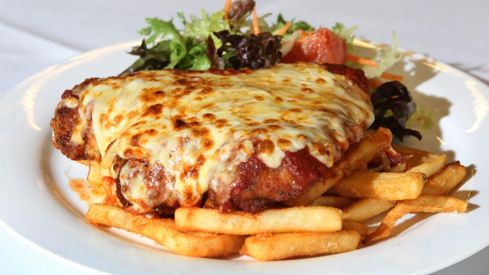

Chicken Parmy

The chicken parmy is an Australian pub staple. Easy to make, hard to perfect.
Spruce up your humble chicken schnitzel with the addition of tomato pasta sauce, melted cheese and fresh basil. This simple topping adds a world of flavour that will delight your friends and family.
Ingredients
- 2 tablespoon olive oil
- 15 gram butter
- Chicken Schnitzels
- 1/3 cup grated mozzarella
- 1/2 cup prepared pasta sauce
- serve topped with basil leaves
Steps
- Preheat oven to 180°C. Heat olive oil and butter together in a large frying pan on medium.
- Fry schnitzels 2-3 minutes, each side, until golden. Drain on paper towel. Transfer chicken to a shallow ovenproof dish.
- Sprinkle with 1/3 cup grated mozzarella. Spoon over 1/2 cup prepared pasta sauce. Sprinkle another 1/3 cup grated mozzarella. Bake, uncovered, 8-10 minutes until bubbly and golden.
- Serve topped with basil leaves. Accompany with salad.